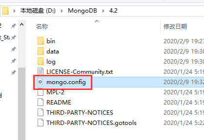
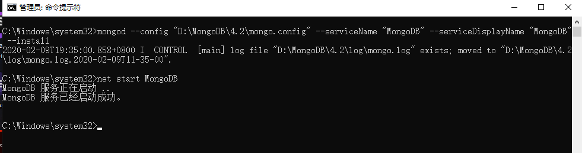
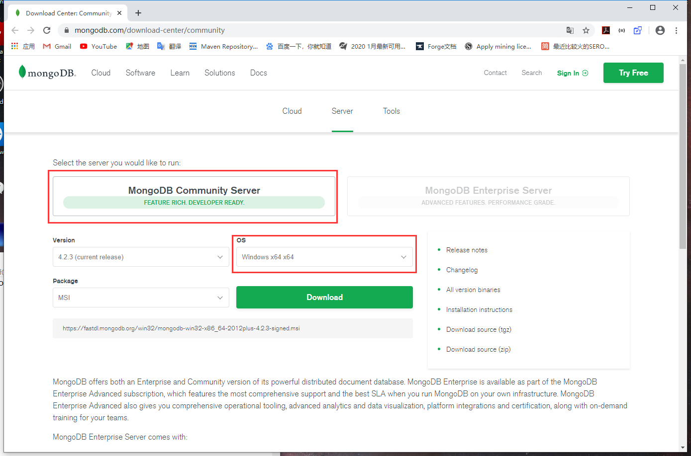
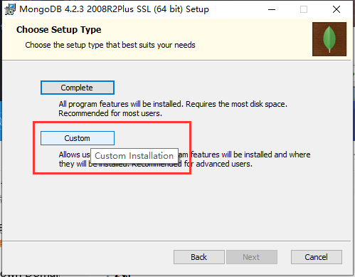
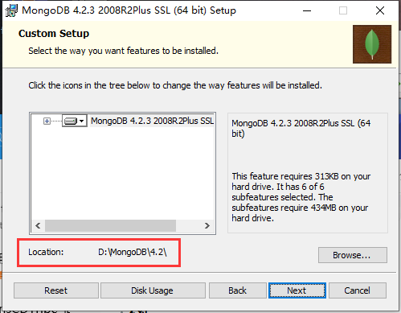
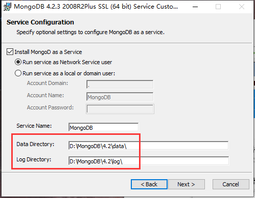
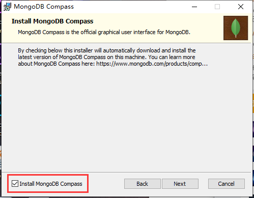

第二节 MongoDB 的安装与配置
作者环境： Windows10 1809
建议使用免安装版
Msi安装包安装：点我转跳
mongo.config详解：点击跳转
免安装版
先到官网：https://www.mongodb.com/download-center/community
 或者可以直接点这个链接下载：https://fastdl.mongodb.org/win32/mongodb-win32-x86_64-2012plus-4.2.3.zip
或者可以直接点这个链接下载：https://fastdl.mongodb.org/win32/mongodb-win32-x86_64-2012plus-4.2.3.zip在有条件的情况下最好将MongoDB放在除系统分区外的其他分区 在这里我放在了“D:\MongoDB\4.2”

创建"/data" 和 "/log" 两个文件夹（"/data"文件夹下，用于存放数据库数据；"/log"文件夹下，用于存放日志）
- 在data文件夹下创建"/db"空文件夹

2. 在log文件夹下创建"mongo.log"空文件

data和log两个文件夹的位置可以随意，不必须放在MongoDB程序的目录下，后面将在配置文件内设置，我这里就为了方便就放在一起了
配置系统环境变量path（可选） 我的电脑->属性->高级系统设置->环境变量->系统变量->选择“Path”->编辑->在后面添加MongoDB的bin目录例如“;D:\MongoDB\4.2\bin”(注意：新版本的Windows 10 不需要加;)不明白请跳过步骤4


在MongoDB安装路径下创建配置文件“mongo.config” 安装路径例：D:\MongoDB\4.2 
为“mongo.config”添加内容 下面的
dbpath和logpath请根据自己的实际情况填写#数据库文件的存放位置 dbpath=D:\MongoDB\4.2\data\db #日志文件存放的路径 logpath=D:\MongoDB\4.2\log\mongo.log # 设置绑定ip bind_ip = 127.0.0.1 # 设置端口 port = 27017 # 是否以安全认证方式运行，默认是不认证的非安全方式 auth = true“mongo.config”详解:点击跳转
请以管理员身份运行cmd或者PowerShell 注意：如果跳过了步骤4，请使用cd命令转跳到MongoDB的bin目录下 （例：cd D:\MongoDB\4.2\bin 如果不在D:\磁盘符下还需输入D:转跳到D分区下）如果设置了步骤4可跳过 之后复制以下指令
mongod --config "D:\MongoDB\4.2\mongo.config" --serviceName "MongoDB" --serviceDisplayName "MongoDB" --install请将
D:\MongoDB\4.2\mongo.config换成你mongo.config的位置 当你看到类似下图的信息是说明MongoDB就安装成功了
当你看到类似下图的信息是说明MongoDB就安装成功了
 到这里不要急着关cmd
到这里不要急着关cmd同样需要有管理权限的cmd 输入下面指令来运行MongoDB
net start MongoDB 看到“已经启动成功”就说明MongoDB已经正常启动了
如果你还不放心你可以打开浏览器输入127.0.0.1:27017这里的端口就是你上面设置的
 看到这个页面你的MongoDB就成功运行了，可以使用客户端操作MongoDB了
看到这个页面你的MongoDB就成功运行了，可以使用客户端操作MongoDB了
Msi安装包安装
- 与免安装版相同到官网下载安装包：https://www.mongodb.com/download-center/community  连网站都懒得打开的童鞋们呢可以直接点击链接下载：https://fastdl.mongodb.org/win32/mongodb-win32-x86_64-2012plus-4.2.3-signed.msi
下完应该是这么个图标的东西

- 双击运行“Next”到第二个界面

如果你想自定义安装软件或者MongoDB的安装目录请选择Custom如果不想调直接选择Complete（这里我建议调整MongoDB的安装目录到"D:\MongoDB\4.2"）

- 调整数据库数据存储位置和Log存储位置

这里我分别放在了"D:\MongoDB\4.2\data"和“D:\MongoDB\4.2\log”(强烈建议修改默认位置，这个都懒得调不建议用数据库了)
这个界面会让你选择是否安装一个叫"Compass"的东西
Compass是4.x之后的一个新功能，就是GUI功能（可视化工具） 这里不建议勾选（没必要、加长安装时间、占空间） Next之后，MongoDB就开始安装了，等待安装成功即可

mongo.config详解
# 数据库文件位置
dbpath=/var/lib/mongodb
#日志文件的路径
logpath=/var/log/mongodb/mongodb.log
# 是否追加方式写入日志，默认True
logappend=true
# 设置绑定ip
bind_ip = 127.0.0.1
# 设置端口
port = 27017
# 是否以守护进程方式运行，默认false
fork = true
# 启用日志文件，默认启用
journal=true
# 启用定期记录CPU利用率和 I/O 等待,默认false
#cpu = true
# 是否以安全认证方式运行，默认是不认证的非安全方式
#noauth = true
#auth = true
# 详细记录输出，默认false
#verbose = true
#用于开发驱动程序时验证客户端请求
#objcheck = true
# # 启用数据库配额管理,默认false
#quota = true
# 设置oplog日志记录等级，默认0
# 0=off (default)
# 1=W
# 2=R
# 3=both
# 7=W+some reads
#oplog = 0
# 是否打开动态调试项，默认false
#nocursors = true
# 忽略查询提示，默认false
#nohints = true
# 禁用http界面，默认为localhost：28017
#nohttpinterface = true
# 关闭服务器端脚本，这将极大的限制功能，默认false
#noscripting = true
# 关闭扫描表，任何查询将会是扫描失败
#notablescan = true
# 关闭数据文件预分配
#noprealloc = true
# 为新数据库指定.ns文件的大小，单位:MB
# nssize = <size>
# 用于Mongo监控服务器的Accout token。
#mms-token = <token>
# Mongo监控服务器的服务器名称。
#mms-name = <server-name>
# Mongo监控服务器的Ping间隔时间，即心跳
#mms-interval = <seconds>
# Replication Options
# 设置主从复制参数
#slave = true # 设置从节点
#source = master.example.com # 指定从节点的主节点
# Slave only: 指定要复制的单个数据库
#only = master.example.com
# or
#master = true # 设置主节点
#source = slave.example.com
# 设置副本集的名字，所有的实例指定相同的名字属于一个副本集
replSet = name
#pairwith = <server:port>
# 仲裁服务器地址
#arbiter = <server:port>
# 默认为false，用于从实例设置。是否自动重新同步
#autoresync = true
# 指定的复制操作日志（OPLOG）的最大大小
#oplogSize = <MB>
# 限制复制操作的内存使用
#opIdMem = <bytes>
# 设置ssl认证
# Enable SSL on normal ports
#sslOnNormalPorts = true
# SSL Key file and password
#sslPEMKeyFile = /etc/ssl/mongodb.pem
#sslPEMKeyPassword = pass